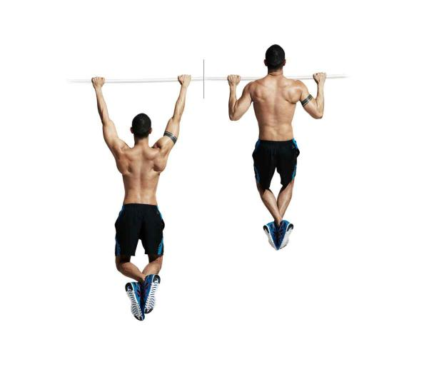

For those of you who are just being introduced to the sport of rock climbing, it may seem like a daunting sport, requiring endurance, strength and balance. And you'd be correct! It is not a particularly easy sport to take on, but you can accelerate your progress by adding on a few of these supplementary exercises to your routine!
The bread and butter of all climbing exercises, the pull-up is going to work on bringing you up to speed as quickly as possible on the upper body strength. If you cannot do a full pull-up, do not stress! Practice negative pull-ups, where you jump up into the top of the pull-up, and try to slow your descent back to hanging as much as possible. This is proper pull-up form:
To maximize your pullups, keep the elbows close to the body, the shoulders and backs set, and use the full range of motion!
Leg raises are performed by hanging from a bar, and bringing your knees your chest while attempting to keep the upper body as still as possible. This develops strength for bringing the feet into a better position while hanging on the wall. If just bringing up the legs with the knees bent becomes easy, try brining the legs up while keeping them completely straight!
Hangs are the simple act of jumping on to the nearest pull-up bar/tree branch/door arch and the act of just hanging on it for as long as you can. This is meant to help improve endurance in tricky positions while climbing, though if you begin feeling any sharp shoulder/wrist/arm pain make sure to stop!
| Exercise | Set 1 | Set 2 |
|---|---|---|
| Pullups | 10 Reps | 8 Reps |
| Leg Raises | 10 Reps | 10 Reps |
| Hangs | Until initial discomfort | Until Exhaustion |
Other key elements for improving any workout include:
To read more about climbing exercises check out this fantastic site. They have a fantastic variety of exercise in a easy to read scrolling format with minimal clutter and well segmented sections!